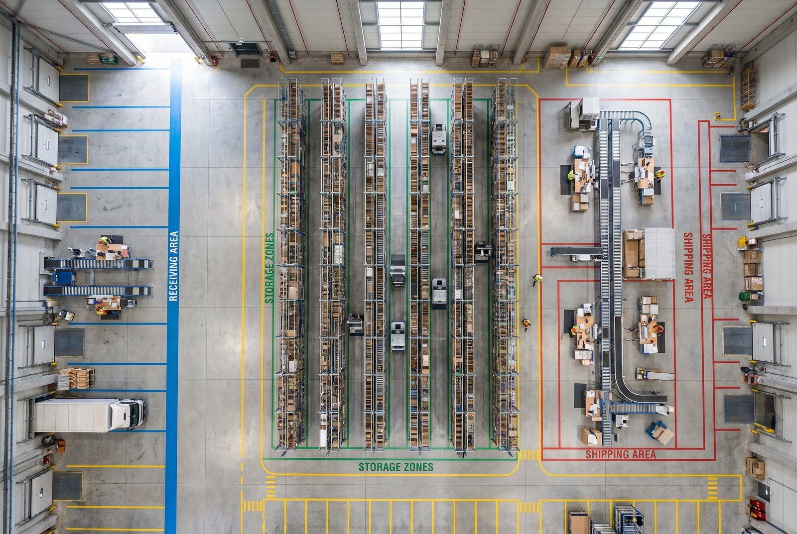

A-varerne sidder bagerst. Plukkeren går 140 meter per ordre. Pakstationen er midt på lageret.
Du betaler for 40% ekstra gang.
4 plukkere × 8 timer × 250 kr. × 20% = 1.600 kr./dag.
400.000 kr./år, fordi layoutet er forkert. Og det er beton, svært at ændre.
Hvad er warehouse layout?
Warehouse layout (lagerindretning eller lagerdisposition) er den fysiske organisering af et lager: placering af reoler, zoner, gangrrækker, pak-stationer, modtagelseszone og afsendelseszone. Et godt layout minimerer bevægelsesdistancer og maksimerer kapaciteten inden for det tilgængelige areal.
Kerneprincipper i warehouse layout:
- Golden Zone: Varer placeres i knæ-til-bryst-højde (80-160 cm) for at minimere række- og bukkeafstand. Højtfrekvente varer her.
- ABC-placering: A-varer nær pakstationen, C-varer længst væk.
- Envejstrafik: Definerede gangretninger reducerer modgående bevægelse og kollisioner.
- Tre-zones-princip: Modtagelse → lager → afsendelse som adskilte, sekventielle zoner.
👉 Har du samme udfordring? Se hvordan SmartPack løser det i praksis
Hvornår er det et problem?
Dit warehouse layout er suboptimalt, når:
- Plukkere bruger over 40% af deres tid på gang (vs. faktisk pluk)
- Kapaciteten ikke øges proportionalt med nye medarbejdere
- Modtagelse og afsendelse konkurrerer om samme areal
- A-varer er placeret langt fra pakstationen
- Varer over 160 cm højde plukkes hyppigt (= nakke- og rygskader + langsom pluk)
- Du er ved at flytte til nyt lager eller udvide nuværende
Hvorfor det er vigtigt, i kroner
Et dårligt layout er en permanent, daglig omkostning:
Scenario: 4 plukkere, 250 kr./time, 8 timer/dag, 20% ekstra gangdistance vs. optimeret:
- 4 × 8 × 250 kr. × 20% = 1.600 kr./dag
- Per år: ~400.000 kr.
Dertil: højere fejlrate når varer er svære at finde, højere ulykkesrisiko med forkert trafikmønster, og længere onboarding for nye medarbejdere.
Hvordan designer du warehouse layout i praksis?
Trin 1: Kortlæg eksisterende data
Før du tegner nyt layout:
- Antal daglige ordrer og ordrelinjer
- Fordeling af ordrelinjer per lagerzone/-gang
- ABC-klassificering af sortiment
- Forventet vækst de næste 3 år
- Krav til special-opbevaring (køl, overstor, farlig)
Trin 2: Vælg flow-type
I-flow: Modtagelse i én ende, afsendelse i den anden. Godt når begge processer er højfrekvente.
U-flow: Modtagelse og afsendelse i samme ende. Godt når arealet er smalt eller portkapaciteten er begrænset.
Trin 3: Placer ABC-varer strategisk
- A-varer: Nær pakstationen, i Golden Zone (80-160 cm), første gang ind
- B-varer: Mellemlang afstand, normal reolhøjde
- C-varer: Yderste reoler, høj placering, gulvpaller
Trin 4: Definér gangrrækker og retninger
Gangrrækker nummereres og markeres. Envejsretning angives på gulvet. Minimumsbredde: 1,2 m for gående plukkere, 2,5 m for trucks.
Trin 5: Pakstation og afsendelseszone
Pakstation placeres tæt på udgående port. Afsendelseszone dimensioneres til 2-4 timers output. Separat modtagelseszone mærkes tydeligt.
Trin 6: Test med simulation
Før fysisk implementering: simulér plukkernes ruter i det nye layout med faktiske ordredata. Identificer potentielle flaskehalse.
Typiske fejl
1. A-varer er placeret på historisk position, ikke strategisk
De første varer fik de nærmeste pladser. Sortimentet har ændret sig. A-varerne er nu C-vare-placeringer og omvendt.
2. Golden Zone bruges til tunge/store varer af praktiske årsager
"Det er nemmest at lægge pallerne der." Men tunge paller bør være på gulvet, ikke i knæhøjde.
3. For smalle gangrrækker
Sparet 20 cm per gang = ekstra reolrække. Men plukkere må side-steppe forbi hinanden og trucks kan ikke komme frem.
4. Pakstationen er midt på lageret
Pakstationen skal være nær UDGANG, ikke nær midten af lageret.
5. Ingen overflow-zoner planlagt
Højsæson og nye sortimentsudvidelser skal have et sted at være. Uden overflow-zone mellemlandes varerne i gangene.
Sådan gør du det rigtigt
1. Revidér ABC-placering hvert halvår
Salgsmønstre ændrer sig. En ny bestseller fortjener en A-placering.
2. Marker alt, zoner, gange, reoler, hylder
Alle gangrrækker har et navn/nummer. Alle hyldeniveauer er mærket. Nye medarbejdere skal være produktive på dag 2.
3. Golden Zone er hellig
De 80-160 cm højde er plukkernes effektivitetszone. Ingen tunge varer, ingen store kolli. Alt, der plukkes mere end 5 gange om dagen, hører her.
4. Skalerede gangbredder fra dag 1
Sæt gangbredde til 1,5-2 m selv om du i dag kun bruger gående plukkere.
5. Brug WMS-data til layoutoptimering
Dit WMS ved, hvilke SKU'er der plukkes hyppigst og fra hvilke placeringer. Brug den data til at validere og optimere layout hvert halvår.
Hvornår du skal handle
- Du flytter til nyt lager inden for 12 måneder
- Plukkere klager over lange gange og svær navigation
- Du har tilføjet 30%+ flere SKU'er uden at redesigne layout
- Modtagelse og afsendelse konkurrerer om samme areal eller porte
- Du måler færre end 75 linjer/time på plukkere i et lager under 1.500 m²
Sådan understøtter SmartPack det
SmartPack bruger placeringssystemet direkte i plukrute-beregningen. Med A* pathfinding respekterer systemet envejstrafik, gangretninger og prioriterede placeringer. ABC-klassificering vises per SKU med anbefaling til Golden Zone-placering. Systemet registrerer plukfrekvens per placering, så du kan validere, om dine A-varer faktisk sidder, hvor de bør.
Brug denne artikel
- ✓ Mål andelen af gang-tid vs. pluktid for din bedste plukker i dag
- ✓ Tegn dit lager op og identificer, om A-varer er placeret nær pakstationen
- ✓ Tjek, om Golden Zone (80-160 cm) bruges til højfrekvente varer eller bare de nærmeste varer
- ✓ Næste skridt: Lav en ABC-placeringsrevision og flyt de 10 største A-varer til optimal placering